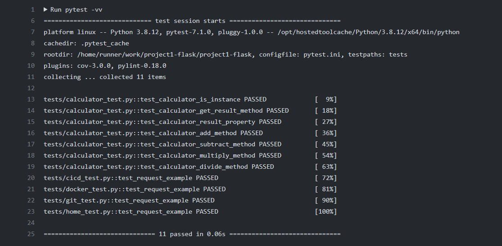

Python: Python is a popular general-purpose programming language that can be used for a wide variety of applications. It includes high-level data structures, dynamic typing, dynamic binding, and many more features that make it as useful for complex application development as it is for scripting or "glue code" that connects components together. It can also be extended to make system calls to almost all operating systems and to run code written in C or C++. Due to its ubiquity and ability to run on nearly every system architecture, Python is a universal language found in a variety of different applications.
Flask Python: Flask is a web framework, it’s a Python module that allows users to develop web applications easily. It has a small and easy-to-extend core: it’s a microframework that does not include an ORM (Object Relational Manager) or such features.

Pytest: Pytest is a testing framework based on python. It is mainly used to write API test cases. This tutorial helps one understand-
- • installation of pytest
- • various concepts and features of pytest
- • sample programs
Current Project File Structure: The file contains .github, workflows, app, templates, calculator, tests, .dockerignore, workflows, readme.md, heroku.yml and so on. Each folder contains sub folders with designated storage of codes that carry out a specific function.
.github This folder explains the functionalities of github. It contains a subfolder called workflows. Workflows is where two different working directory is placed. Workflows contains dev.yml and prod.yml
- dev.yml- a file that is the developmental version maintaining automated actions.
- prod.yml- this file is responsible for showing the current page and normally does not include testing operations.
app: The app folder contains folders called simple pages and static. This is the storehouse for the applications being used on the website development
- Simple pages- contains __init__.py which creates the app instances and the route for each page and its location.
- Static- contains css, images, js folders that holds the files for the slideshows, designs, images, styles, and scripts incorporated on the webpage.
templates- contains the html folders for home page and content pages. The templates contain base.html, docker.html, git.html, python.html,and cicd.html. The mentioned html files are what the website is based upon. The styles, images, and slideshows on these html pages are somewhat dependent on the app folders
tests: this is where pytest checks whether or not the directed folder exists and tests the input. This folder contains the following:
- __init__.py- initiation page
- calculator_test.py- for calculator tests
- docker_test.py- docker page content tests
- git_test.py- git page content tests
- pythontest.py- python page content tests
- home_test.py- home page content tests
- cicd_test.py- CI/CD page content tests
- conftest.py- application instantiation
.dockerignore: contains list of files or directories which is to be ignored while building an image
docker-compose.yml: it maintains folders that the Dockerfile will use if accessed through a terminal
Dockerfile: directions for Docker to create a container for the flask
heroku.yml: managing the hosting site "Heroku" on building the app or website
readme.md: contains information on the files in a directory